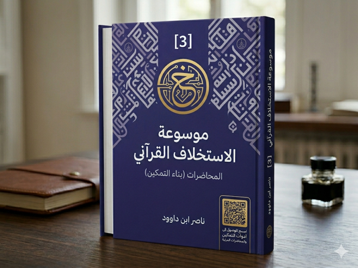

ناصر ابن داوود

نسخة نصية مستخرجة من ملف Word الذي قدمه المؤلف؛ راجع المصدر الأصلي.
جارٍ تجهيز القارئ…
المجلد الثالث - دين الحق (معمارية السنن والعمران)
فهرس الكتاب
المجلد الثالث - دين الحق (معمارية السنن والعمران) 1
فهرس الكتاب 1
III مقدمة الكتاب 6
III.1 الباب الأول: المرجعية المعرفية (علم اللسان والكتاب) 6
III.1.1 الفصل الأول: حاكمية اللسان (تحرير المصطلحات ونفي الترادف) 6
III.1.2 الفصل الثاني: المجلدات الثلاثة (الكتاب، القرآن، الذكر) 7
III.1.3 الفصل الثالث: وحدة الدين وتعدد الرسالات 7
III.2 الباب الثاني: الركن الأول - الدين الخالص (معمارية الروح) 8
III.2.1 الفصل الأول: بروتوكولات الاتصال (الفتح والإمداد الطاقي) 8
III.2.2 الفصل الثاني: فلسفة الشعائر (بين الراحة والصيانة) 8
III.2.3 الفصل الثالث: إدراك البصيرة (رؤية الحق المطلق) 9
III.2.4 الفصل الرابع: الحسد والعمل النفسي: تحرير مفهوم الحسد كفعل إيذائي مادي ونفسي بعيداً عن خرافات "العين" والإسرائيليات 9
III.3 الباب الثالث: الركن الثاني - دين الحق (فقه السنن والعمل) 10
III.3.1 الفصل الأول: فريضة العلم 13
III.3.2 الفصل الثاني: السنن الكونية 14
III.3.3 الفصل الثالث: الأسباب والتسخير 15
III.3.4 الفصل الرابع: العلاقة بين الوحي والكون 16
III.3.5 الفصل الخامس: العلم والعمران 17
III.3.6 الفصل السادس: سنن التغيير من إصلاح النفس إلى صناعة الحضارة 19
III.3.7 الفصل السابع: فريضة العلم (الاستسلام لقوانين الطبيعة وحقائق الأشياء) 21
III.3.8 الفصل الثامن : فاعلية الجوارح: نقد التدين القولي (دأب المنافقين) وإثبات أن الإيمان والتقوى عمل يبدأ من القلب ويظهر في السلوك 22
III.3.9 الفصل التاسع: فاعلية الجوارح 24
III.3.10 الفصل العاشر: نقد النسخ إبطال مقولة نسخ الآيات 27
III.4 الباب الرابع: الركن الثالث - الدين القيم (منظومة السلام الاجتماعي) 28
III.4.1 الفصل الأول: آية الزواج: الزواج كآية كونية تهدف للسكن والمودة، واختيار الشريك على أساس المنهج الإلهي 28
III.4.2 الفصل الثاني: ميثاق القوامة والرجولة: فهم القوامة كدرجة تكليفية وإصلاحية للرجل، وليست تشريفاً تسلطياً 29
III.4.3 الفصل الثالث: تشريع الطلاق: رحلة الاحتواء من الوعظ إلى الهجر ثم الحكمين قبل وقوع الفراق 31
III.5 الباب الخامس العمران الراشد 32
III.5.1 الفصل الأول: الدين القيم على مستوى الفرد 34
III.5.2 الفصل الثاني: الدين القيم على مستوى الأسرة 35
III.5.3 الهندسة التشغيلية والعكسية للكيان الأسري 38
III.5.4 الفصل الثالث: الدين القيم على مستوى المجتمع 41
III.5.5 الفصل الرابع: الدين القيم على مستوى المؤسسة 44
III.5.6 الفصل الخامس: الدين القيم على مستوى الدولة 48
III.5.7 الفصل السادس: الدين القيم والاقتصاد 52
III.5.8 الفصل السابع: الدين القيم والطبيعة 56
III.5.9 الفصل الثامن: الدين القيم على مستوى الحضارة 61
III.6 الباب السادس: العمران المؤسسي المعاصر 66